Pole-Zero plot and its relation to Frequency domain:
Pole-Zero plot is an important tool, which helps us to relate the Frequency domain and Z-domain representation of a system. Understanding this relation will help in interpreting results in either domain. It also helps in determining stability of a system, given its transfer function H(z).
The Fourier transform of a sequence is given as
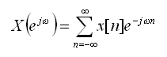
and Z-transform is given as
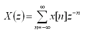
There is a close relationship between these equations. If we replace z with e jw, then the z-transform reduces to the Fourier transform. When it exists, the Fourier transform is simply X(z) with z=e jw.i.e for |z| = 1, the z-transform corresponds to the Fourier transform. If instead we express z in polar form as
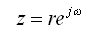
This is the Fourier transform of the product of the original sequence x[n] and the exponential sequence r -n. For, r = 1, this is the Fourier transform. So, it is possible for the z-transform to converge even if the Fourier transform does not.
On a similar line, the Fourier transform and z-transform of a system can be given as
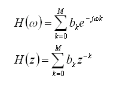
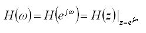
Visualizing Pole-Zero plot:
Since the z-transform is a function of a complex variable, it is convenient to describe and interpret it using the complex z-plane. In the z-plane, the contour corresponding to |z| = 1 is a circle of unit radius. This contour is referred to as the Unit Circle. Also, the z-transform is most useful when the infinite sum can be expressed as a simple mathematical formula. One important form of representation is to represent it as a rational function inside the Region Of Convergence.,i.e
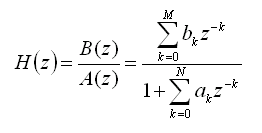
where, the numerator and denominator are polynomials in z. The values of z for which H(z) = 0 are called the zeros of H(z), and the values of z for which H(z) is ¥ are referred to as the poles of H(z). In other words, the zeros are the roots of the numerator polynomial and the poles of H(z) for finite values of z are the roots of the denominator polynomial. A plot of Pole and Zeros of a system on the z-plane is called a Pole-Zero plot. Usually, a Zero is represented by a 'o'(small-circle) and a pole by a 'x'(cross). Since H(z) evaluated on the unit-circle gives the frequency response of a system, it is also shown for reference in a pole-zero plot. The pole-zero GUI also uses this convention.
The pole-zero plot gives us a convenient way of visualizing the relationship between the Frequency domain and Z-domain. The frequency response H(e jw ) is obtained from the transfer function H(z), by evaluating the transfer function at specific values of z = e jw. Since, the frequency response is periodic with period 2p, we need to evaluate it over one period, such as -p < w < p. If we substitute these values of w in z= e jw, values of z lie on the unit circle and range from z = -1 all the way around and back to the point z = -1. This is shown in Figure 1 below. From this the periodicity of 2p in frequency domain corresponds to moving through an angle of 2p on the unit circle.
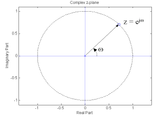
Figure
1
Interpreting Pole-Zero plot:
In the case of FIR filters, the location of zeros of H(z) can be used to design filters to null out specific frequencies. This can be done by placing zeros on the unit circle at locations corresponding to the frequencies where the gain needs to be 0.
In the case of IIR filters, the Pole-Zero plot can be used to determine
stability. This can be done with some knowledge about the region of convergence
and frequency response. For a given sequence, the set of values of z
for which the z-transform converges is called the Region of Convergence
(ROC). Using the definition of Z-transform given earlier in this
section, the condition for convergence is as given below.
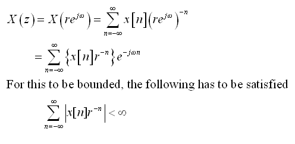
So, as stated earlier, the z-transform might converge even if the Fourier transform does not converge. Because from the equations above, depending on the value of r the z-transform might converge while the Fourier transform might not still converge. Since, for Fourier transform to converge, we need the following condition.
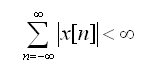
Further, the convergence is dependent only on the magnitude of z i.e |z|. Thus, if z = z1 is in the ROC, then all values of z on the circle defined by |z| = |z1| will also be in the ROC. As a result, the ROC will consist of a ring in the z-plane centered about the origin. The ROC might extend outward to ¥ or inward to origin depending on the sequence. If the ROC includes the Unit circle, this implies convergence of z-transform for |z| = 1 or, equivalently, the Fourier transform converges. The ROC cannot contain a Pole, since at a pole H(z) is infinite by definition and hence does not converge.
For a causal system (impulse response h(n) is zero for n< 0), the ROC is the exterior of a circle, including ¥. Further, for a system to be stable, its impulse response must be absolutely summable. This implies the Fourier transform converges, and consequently, the ROC of H(z) must include the unit circle. Combining these two properties, a causal LTI system with a rational system function H(z) is stable if and only if all of the poles of H(z) lie inside the unit circle.i.e., the magnitude of poles must be less than 1. Thus, stability of a IIR system can be determined by looking at the pole location.
This section has a given a brief description of Pole-Zero plot and its use in identifying system behavior. The explanation here pertains mostly to the Pole-Zero GUI, so please refer to standard texts for a more complete description. The next section, provides examples to link this theory with the Pole-Zero GUI.
We will now look at 2 examples, to see how the Pole-Zero GUI can be used in
visualizing the relation between frequency and z-domain.
Example 1:
As a first example, we will determine the filter coefficients of a FIR filter,
that will filter out specific sinusoidal frequency. We plan to achieve this
using zeros of the system alone. We can make use of the fact that, signals of
the form z n can be removed by placing the zeros in z-plane
appropriately. A sinusoidal signal of frequency w0 can be represented as,
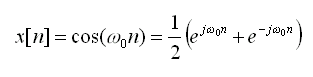
In order to filter out this component from the input signal, we have to filter out two signals of the form z1 n and z2 n. The required second order filter will have zeros at z1 = exp(jw0) and z2 = exp( -jw0), can be obtained by cascading first-order filters to filter each component. The first-order filters have a system function of the form
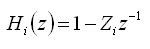
where, Zi is the location of the zero for
that system. Using this the combined system function is given below. In our
case, w0=p/3
and the transfer function gets modified accordingly.
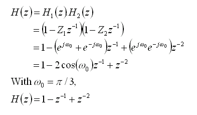
From the frequency response in Figure 2, we can see the effect of zeros at 0.5+j0.866 and 0.5-j0.866. H(e jw) becomes zero at w=p/3 and -p/3.
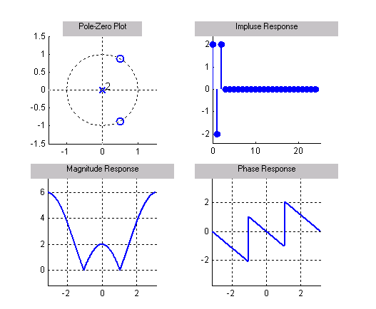
Figure 2
Example 2:
The 2nd example, shows how a IIR filter's system function and its stability can
be determined by inspecting its poles. Consider the 1st order system transfer
function
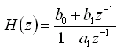
The corresponding impulse response is given as,
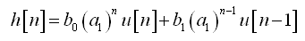
From, this we see that if |a1| > 1, then the system becomes unstable and if |a1| < 1, then the system remains stable. Lets use the Pole-Zero GUI to see if this can be visualized.
In the case, where |a1| > 1, consider a transfer
function
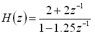
To do this using the pole-zero GUI, we can enter the filter coefficients, using the dialog box. Figure 3 shows the pole-zero plots for an unstable system.
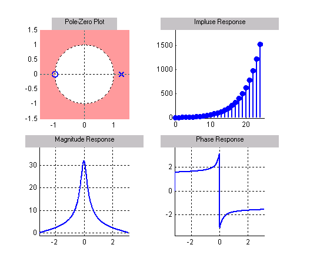
Figure 3
In order to relate the Pole-Zero plot to the frequency response, the system needs to be stable. Since, it is not stable for this case, we cannot use this to determine the frequency response.
Similarly, we can consider a stable system, which can be
represented as
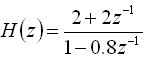
In this case the system remains stable as can be seen from the Pole-zero GUI in Figure 4.
Since the system in stable, we can relate the pole-zero plot to the frequency response of the system. A stable system is that, which produces a bounded output, when the input to the system is bounded.
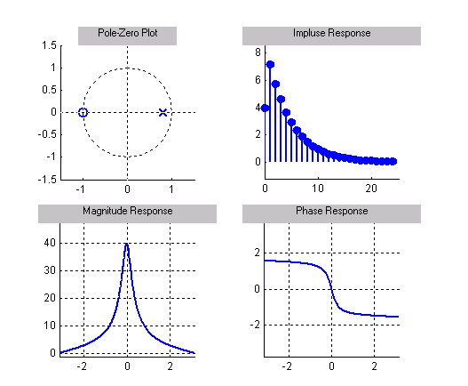
Figure 4